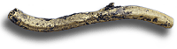

Who keeps the treasure?Some of the estimated 400,000 objects found each year may become the property of the Crown and are thus saved for the nation and displayed in museums around the country. If this happens, the finders will usually be rewarded with the full market value of the treasure. However, many objects are returned to the finders after they have been recorded and studied. Some objects turn out to be very interesting regardless of their precious metal content. Often the archaeological information associated with them is of far greater value than the objects themselves. This small medieval ingot was found at Ipswich
and looks like gold..
|